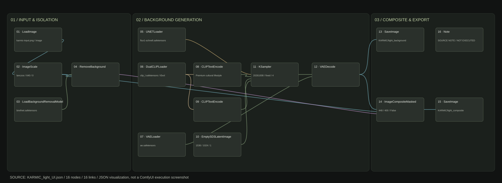
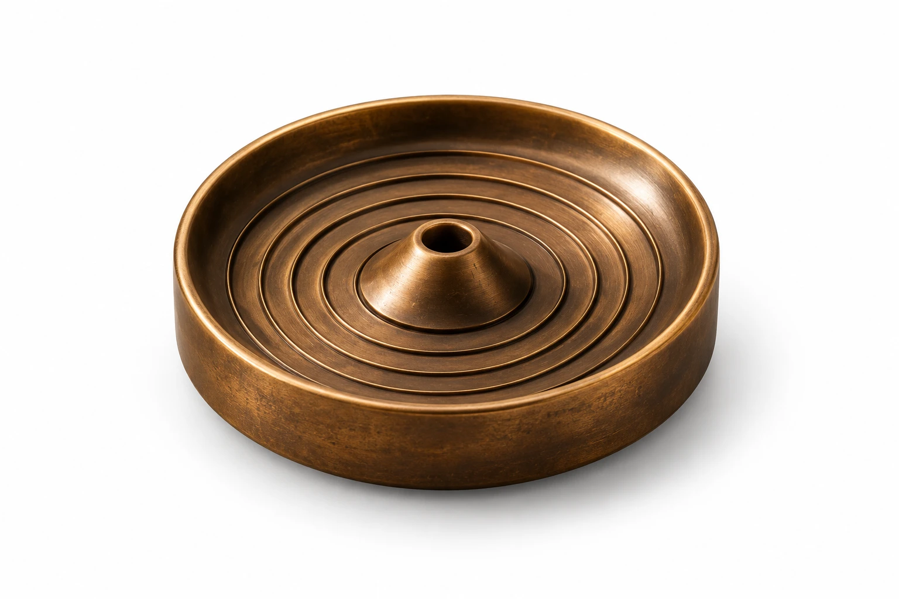
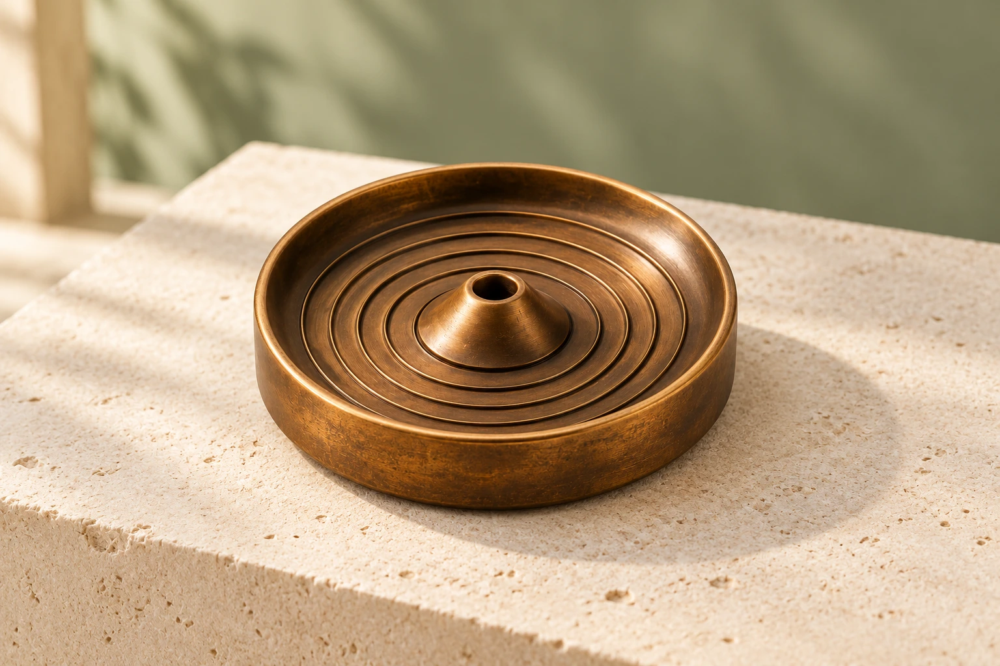
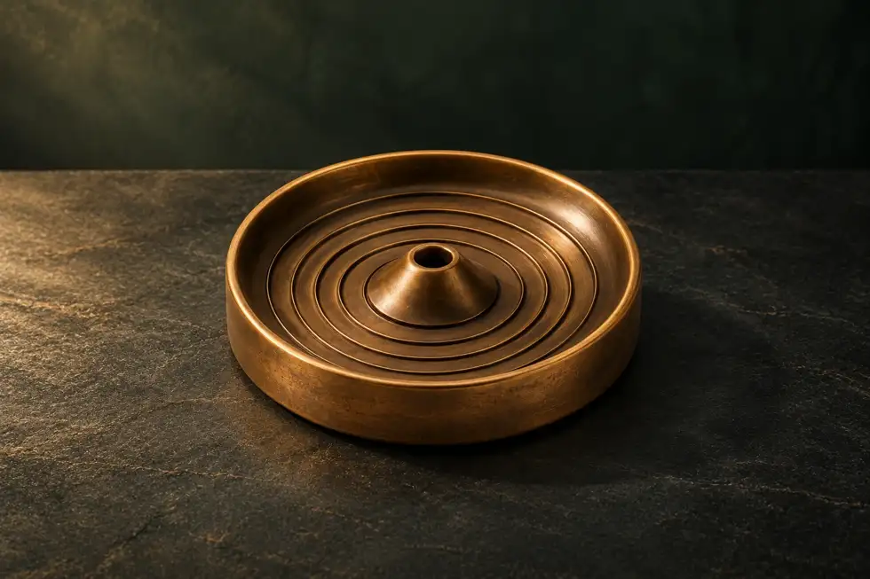

CASE 01 / 宠物 IP / 插画 / 角色视觉
爱宠天堂 · 2.3万+ 赞 / 1500+ 粉爱宠天堂 · 可爱的情感连接
围绕宠物情感与「宠灵」角色，探索可爱、趣味与叙事性的视觉表达。
- 视觉方向
- 以角色表情和情境设计传达宠物内容的情绪与趣味。
- 创作实践
- 结合逐帧动画与 After Effects 制作；此处展示静态视觉。
CHARACTER · STORY · ANIMATION
叶昊 YE HAO
角色视觉与动画创作，以情境和动态传达情感。
京都艺术大学动画硕士，具备 IP 内容与 AIGC 制作经验。
金刚 Vajra · 单条视频播放
四账号累计点赞
四账号累计内容
爱宠天堂累计点赞
MOTION SELECTS / 30 SECONDS
30 秒精选 · 静音循环，可暂停；节省流量或减少动态效果时点击播放。
01 / SELECTED CASES
从宠物情感、文化 IP 到动画创作，呈现角色表达的不同侧面。
CASE 01 / 宠物 IP / 插画 / 角色视觉
爱宠天堂 · 2.3万+ 赞 / 1500+ 粉围绕宠物情感与「宠灵」角色，探索可爱、趣味与叙事性的视觉表达。
CASE 02 / 文旅 IP / 角色视觉 / 表情设计
关小爷 · 累计 1.4万+ 赞成都武侯祠衍生 IP 的角色视觉，以「福」「运」为主题延展传播内容。
CASE 03 / 二维动画 / 角色设定 / 场景设计
动画组一等奖获第十届国际大学生微电影盛典动画组一等奖。这里呈现角色设定与场景视觉。
产品场景与电商设计，补充角色创作之外的商业应用能力。
CASE 04 / 华为 · 复旦大学 / CORPORATE GIFTS
企业与高校定制项目03 / METHODS & EXPLORATIONS
从商品图到场景视觉，
把生成与产品保真分开处理。
基于此前的 FLUX 浅色桌面场景工作流，延展浅色与深色两种视觉方向。核心思路是生成背景，再使用前景遮罩合成商品，减少主体被重绘的问题。
真实 JSON 结构 · 视觉预演单独标注LoadImage → ImageScale
BiRefNet → 前景遮罩
FLUX schnell + 双 CLIP
KSampler → VAEDecode
ImageCompositeMasked
SaveImage → 后期融合

16 个节点 / 16 条连接 · 点击放大。依据实际 JSON 绘制，并非 ComfyUI 运行截图。
生成背景与商品本体分开处理，通过遮罩合成保留主体像素；阴影与边缘仍需后期检查。



样图由 ImageGen 依据此流程的视觉目标制作，不是上述 JSON 的实际运行输出。JSON 已完成静态检查，尚未本机执行；原流程不自动补齐接触阴影，正式出图需后期融合与一致性检查。
1536 × 1024 背景；商品图等比缩放至 640 px 宽，合成坐标 x=448、y=400；固定种子 20261008，4 步，CFG 1，Euler / Simple。包内包含原始 UI JSON、两份 KARMIC 场景适配 JSON 和输入参考图。需安装对应模型与 BiRefNet 节点。已检查节点引用、画布范围与配置文件可读性。
将一致的色彩、纹样与材质语言用于品牌触点。以下为 AI 辅助概念探索，独立于前面的商业项目展示。
04 / ABOUT ME
从角色设定，
走向有情绪的画面。
我是叶昊，京都艺术大学动画专业硕士，现居深圳。目前从事 IP 视觉与 AIGC 设计，擅长搭建 ComfyUI 工作流，通过 LoRA 训练与调用控制风格，结合动画和后期制作，将传统文化、宠物情感与文旅 IP 转化为视觉内容。
可独立交付：电商详情页 / Amazon listing 视觉 / 产品效果图 / 包装与礼盒视觉 / 短视频与动效 / IP 角色设定。
05 / EXPERIENCE
腾讯文创周边项目（QQ IP 授权）的详情页与周边视觉；华为星辉白瓷、练秋湖园区纪念礼品，以及复旦大学纪念杯与礼盒视觉。展示范围以本页交付图片为准。
2023 年参与《月光下的异世界之旅 第二幕》制作流程见习；2024 年参与《最后可以再拜托您一件事吗？》制作流程见习。以实习、研修身份学习分镜、Layout、动画、上色与摄影工序，以及商业动画的品质控制和交付规范。
搭建 ComfyUI 工作流，训练与调用 LoRA，批量输出产品效果图、场景图和营销插画。独立完成「念回 KARMIC」全系列视觉，主导「关小爷」「爱宠天堂」视觉与动画，建立统一的视觉规范与交付流程。
独立完成实验动画《格尔尼卡》，参展京都 HOP 展、京都 SUPT 展。主攻动画创作、分镜设计、动效表现与 IP 角色动画。
GPA 3.58，专业排名第 9；连续 3 年获得一等奖学金。
LET’S WORK TOGETHER / 合作邀请
叶昊 · 深圳 / YE HAO · SHENZHEN
839914251@qq.com
本页用于展示个人项目职责与视觉成果。相关品牌、标识及 IP 权利归各自权利人所有，不代表本人任职于相关机构或获得其官方推荐。QQ IP 授权范围限于对应产品线。